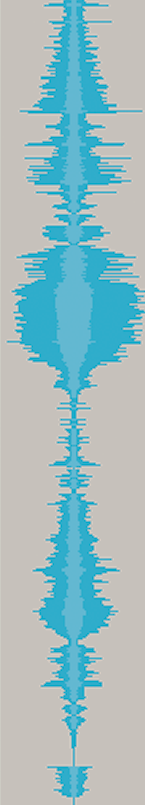
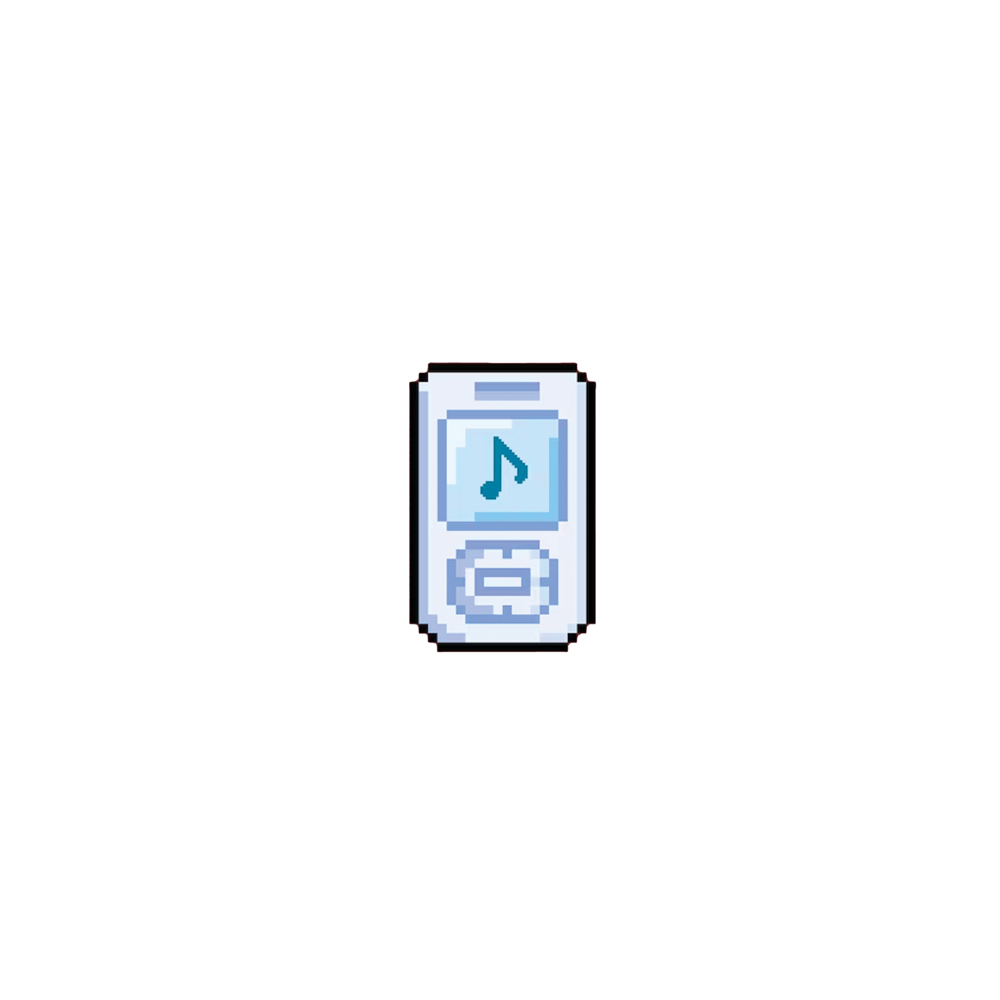
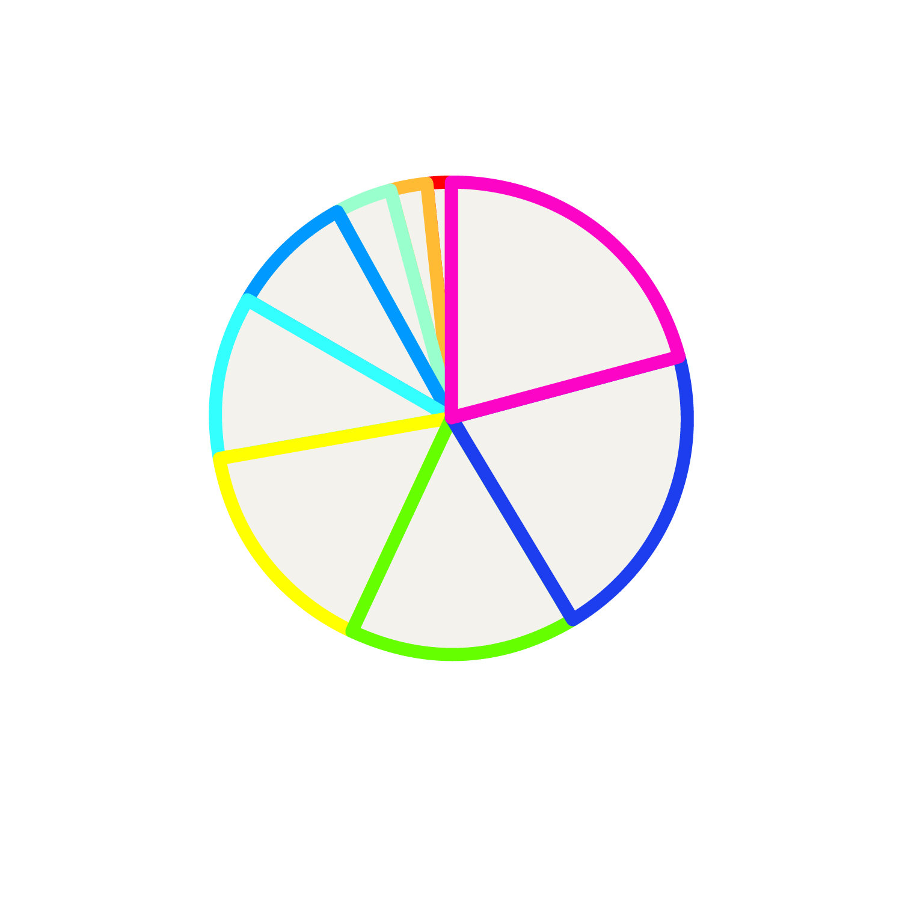

Genres

Kristen listened to 9 genres this week.
Rap and Hip-Hop were the most listened to at 37.9%, followed by R&B, 15.9%; Jazz, 11.4%;
Rock/Rock & Roll, 10.6%; Electronic/House, 9.1%; Pop, 6.1%; Ballad/Folk, 4.4%; Indie, 3.8%; and Disco, 0.8%.
Artists
Kristen listened to 51 artists this week. The top three most-listened-to were Drake, Greta Van Fleet, and Lil Wayne.